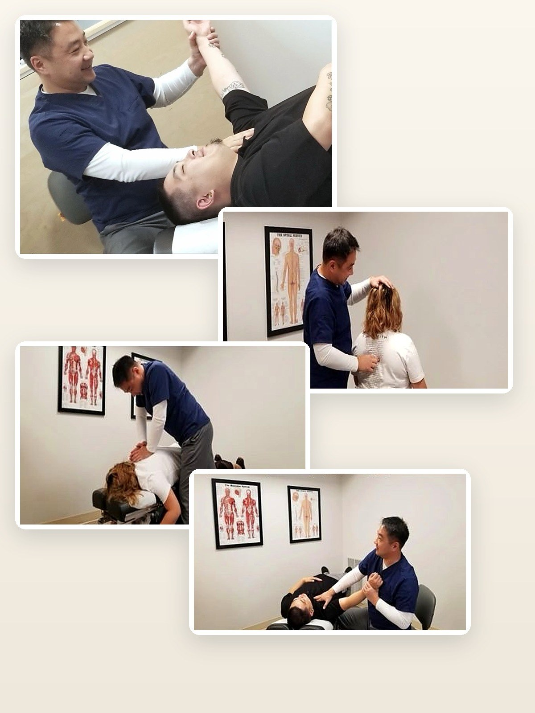

Motor vehicle accident care
Whiplash, seatbelt and airbag injuries, sprains and the stiffness that shows up the next morning. Examined and documented for your claim.
Downtown Renton, Washington · By appointment
Whiplash, neck and back pain, headaches and stiffness after a crash — treated by Dr. Jay Ryu, DC, who explains what is happening, how long it should take, and how your auto insurance PIP coverage pays for it.
Auto injury & PIP
In Washington, every auto insurer must offer Personal Injury Protection (PIP). It pays for medical treatment after a crash no matter who caused it — and under state rules it pays before your health insurance does. Here is how it works with us, in three steps.
Date of the accident, where you are sore, and your claim number if you already have one. We find the earliest opening and set aside enough time for a full exam — not a five-minute adjustment.
Bring your auto policy or claim information. We confirm your benefits with your adjuster and send claims to your PIP carrier, so covered treatment costs you nothing out of pocket. If something will not be covered, you hear it from us first.
Your exam findings, diagnosis, treatment plan and progress notes are written the way adjusters and attorneys need them. If you are working with a lawyer, we send records with your signed authorization.
The figures above summarize Washington State law (RCW 48.22) and the Office of the Insurance Commissioner's guidance. Your own policy controls what is paid. This page is general information, not legal advice.
Services & conditions
Every visit starts with a proper examination: history, orthopedic and neurological screening, and a hands-on assessment. Treatment is chosen for your case, not from a menu.
Whiplash, seatbelt and airbag injuries, sprains and the stiffness that shows up the next morning. Examined and documented for your claim.
Precise spinal manipulation and low-force techniques to restore joint motion, reduce pain and take pressure off irritated nerves.
Myofascial release and trigger-point work for tight, guarded muscles that keep pulling joints back out of place.
Restricted turning, headaches at the base of the skull, and the deep ache that lingers weeks after a rear-end collision.
Facet and disc-related pain, sacroiliac dysfunction, and nerve pain that travels into the hip, thigh or calf.
Cervicogenic and tension-type headaches, jaw and neck tension, and the fog that comes with a stiff upper spine.
Hours at a screen, a heavy bag on one shoulder, long drives — the slow build of upper-back and shoulder pain.
Strains, repetitive-stress injuries and joint pain from training, lifting or a physically demanding job.
Not sure whether chiropractic care is right for your problem? Call and ask. If it needs imaging, another specialist or urgent care, we will tell you and help you get there.
Request an appointment
Therapeak Chiropractic
Opened in Renton in 2026
One doctor. One plan. Your case, followed closely.
About your doctor
Dr. Ryu is a Doctor of Chiropractic and a graduate of the University of Western States, one of the oldest chiropractic and integrated-health institutions in the country. He founded Therapeak Chiropractic to practice the way he believes care should work: careful examination first, plain-language explanations, and treatment that aims at a clear end point.
Many people arrive after months of being told something vague — "it's your posture," "it'll settle down" — with no clear answer and no plan. The first visit is spent finding out what is actually going on; after that, the question is whether the plan is working.
Common questions
If your policy includes Personal Injury Protection, it can pay for chiropractic treatment that is reasonable, necessary and related to the crash, for care received within three years of the accident. Washington insurers must offer PIP, with a standard medical benefit of up to $10,000 per person. We verify benefits with your adjuster and bill PIP directly, so covered care does not come out of your pocket.
No. Washington is a direct-access state — you can see a chiropractor without a physician referral. If your case turns out to need imaging or another specialist, we will say so and refer you.
Yes. PIP is no-fault coverage. It pays for your care while fault is still being worked out, so treatment does not wait on the other insurance company.
We will go through the options with you — billing your health insurance, a letter of protection from your attorney, or self-pay — and explain the cost of care before treatment begins.
As soon as you reasonably can. Whiplash symptoms often appear hours or days after a crash, and an early exam helps rule out fracture, nerve involvement and other injuries that need a different kind of care.
Yes, with your signed authorization we provide exam findings, treatment plans and progress notes in the format adjusters and attorneys ask for.
Location & hours
Suite 510 at 15 S. Grady Way, a short drive from I-405 and easy to reach from Kent, Tukwila and Newcastle.
By appointment
We schedule each patient individually. Call or email and we will offer the earliest times available.
Good for records requests, insurance questions and non-urgent scheduling.
Request an appointment
Fill in the form and it comes straight to the clinic inbox. We reply during business hours — and nothing is stored on this website.
Or email us directly at therapeakchiro@gmail.com.